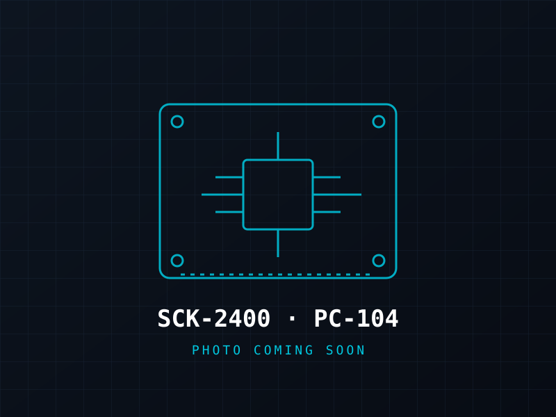

One RF Path · Two Form Factors · One Ground Station
Both are fully programmable CC2652P platforms. Our open source (GPLv3) firmware is a jumpstart you modify for your own use case; hardware designs are proprietary. The SCK-2400 is the full development board. The SCK-2400-M is the same CC2652P RF path as a compact module with no power supply and castellated edge pads, for soldering straight onto your own board. Same firmware, same ground station.

SCK-2400 · Development Board
Same form and fit as the SCK-915: same mounting holes, same 3D-printed stands, same SCK-PBL-1 payload connections. Onboard power supply and conditioning, with headers for power, UART, SPI and I2C. Mainly for development, and flight-ready for HAB and LEO missions.
| Parameter | Value |
|---|---|
| Form factor | Same as SCK-915 (drop-in replacement) |
| Power | Onboard power supply and conditioning |
| Interfaces | Headers: power, UART, SPI, I2C |
| Microcontroller | TI CC2652P1FRGZ |
| RF Frequency | 2.4GHz ISM band |
| TX Power | +20 dBm (high-power PA) |
| Modulation | 2-GFSK 250 kbps |
| Protocol | CCSDS Space Packet |
| Encryption | AES-128-CCM per-packet |
| OAD | Over-air firmware update in <25s |
| Payload interface | 115200 baud UART — Pico bridge |
| Use | Development · HAB · LEO |

SCK-2400-M · Solder-down Module · Full page →
The same RF path as the SCK-2400 in a much smaller module. No power supply on board, and no headers: power in, UART0, UART1, SPI, I2C, JTAG and spare GPIO come out on castellated edge pads along its two long edges, so you can solder it straight onto your own custom board.
| Parameter | Value |
|---|---|
| Form factor | Compact solder-down module, approx. 43.7 × 33.6 mm; JTAG on edge pads (no 2×5 header) |
| Power | None onboard — supplied by your host board |
| Interfaces | Edge pads on two long edges: power in, UART0, UART1, SPI, I2C, JTAG, spare GPIO |
| RF path | Same as SCK-2400 |
| Microcontroller | TI CC2652P1FRGZ |
| TX Power | +20 dBm (high-power PA) |
| Protocol / Encryption | CCSDS · AES-128-CCM |
| OAD | Over-air firmware update in <25s |